Señales de Tránsito en Perú: Catálogo Completo con Significado
Las señales de tránsito son uno de los temas con más preguntas en el examen de conocimientos del MTC. Aquí están las 58 señales del balotario oficial — reglamentarias, preventivas e informativas — cada una con su imagen real y el significado exacto que exige el examen.
Las 3 categorías de señales verticales
El Reglamento Nacional de Tránsito del Perú agrupa las señales verticales en tres grandes familias, según su forma y color:
- Reglamentarias (R): notifican una obligación, prohibición o restricción. No acatarlas es una infracción de tránsito.
- Preventivas (P): advierten sobre un peligro específico más adelante en la vía, para que el conductor reduzca la velocidad o tome precauciones.
- Informativas (I): guían al conductor e identifican servicios o lugares de interés cercanos (hospitales, grifos, talleres, etc.).
Señales Reglamentarias (20)
Indican una obligación, prohibición o restricción. Su incumplimiento constituye infracción de tránsito. Tienen forma circular o cuadrada con borde/aro rojo, salvo las de obligación (círculo azul) y PARE (octágono rojo).
El único sentido de desplazamiento es continuar de frente
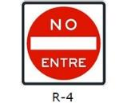
Que está por ingresar a una vía de sentido contrario y no debe entrar
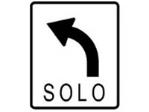
Señal de obligación: siga la dirección indicada
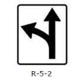
Que el carril por donde circula permite girar a la izquierda o seguir de frente
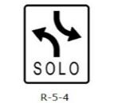
Que la intersección contempla giros tangentes a la izquierda en ambos sentidos
Está prohibido voltear a la izquierda y, por lo tanto, también está prohibido el giro en U
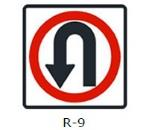
Que está permitido el giro en U
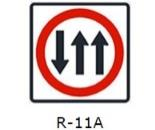
Que es una vía de tres carriles y usted puede utilizar los dos de la derecha
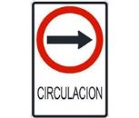
Circular solo en el sentido indicado por la flecha
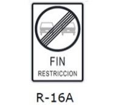
Fin de la restricción de prohibido adelantar
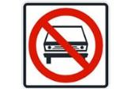
Prohibida la circulación de vehículos automotores
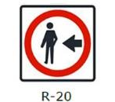
Que los peatones deben circular por la izquierda
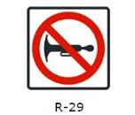
Prohíbe el uso de la bocina
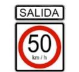
Que al salir de la vía por donde está circulando, la velocidad máxima es 50 km/h
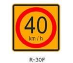
Regula la velocidad máxima permitida en curvas
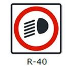
Circular con luces bajas
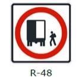
Zona de carga y descarga
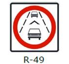
Se debe mantener la distancia de seguridad entre vehículos
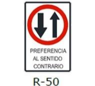
Que si solo hay un carril no tiene preferencia el que está mirando la señal y debe darle paso al del sentido contrario
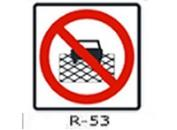
Prohíbe al conductor detener el vehículo dentro del área de la intersección
Señales Preventivas (32)
Advierten sobre un peligro en la vía más adelante (curvas, cruces, superficies, etc.) para que el conductor tome precauciones. Tienen forma de rombo (diamante) amarillo con símbolos negros.
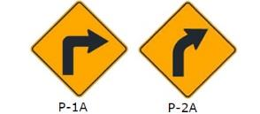
La señal P-1A advierte la presencia de curva pronunciada a la derecha mientras que la P-2A advierte la presencia de curva suave a la derecha
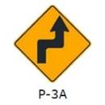
Hay una curva y contra-curva pronunciada a la derecha
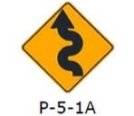
Se aproxima a un camino sinuoso a la izquierda
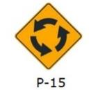
Proximidad de una intersección rotatoria (óvalo o rotonda)
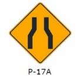
Reducción de la calzada en ambos lados
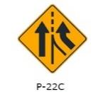
Se aproxima un carril adicional
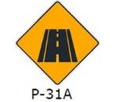
La proximidad del final de la vía
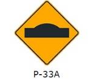
Señal de proximidad de un reductor de velocidad tipo resalto
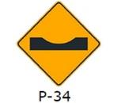
Se aproxima a un badén
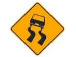
Superficie deslizante
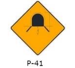
Que usted se aproxima a un túnel
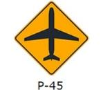
Vuelo de aviones a baja altura
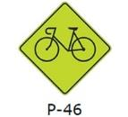
Ciclistas en la vía
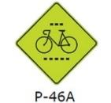
Que nos aproximamos a un cruce de ciclovía
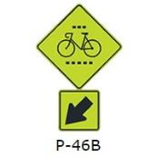
La ubicación de un cruce de ciclistas
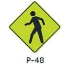
Zona con presencia de peatones
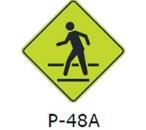
Proximidad a un cruce peatonal
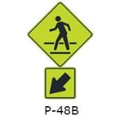
Ubicación de un cruce peatonal
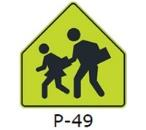
Zona escolar
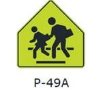
Proximidad a un cruce escolar
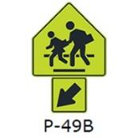
Ubicación de un cruce escolar
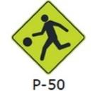
Niños jugando
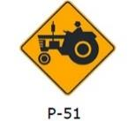
Maquinaria agrícola en la vía
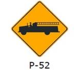
Que se aproxima a una salida de vehículos de bomberos
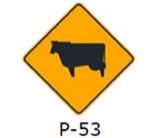
Animales en la vía
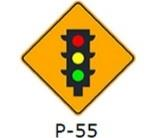
Proximidad a un semáforo
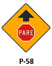
Que usted se aproxima a una señal de PARE
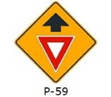
Que usted se aproxima a una señal de CEDA EL PASO
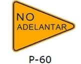
Prohibido adelantar
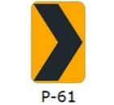
Está circulando por una curva horizontal
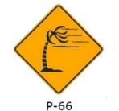
Que se aproxima una zona donde hay ráfagas de viento lateral
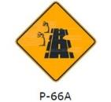
Que se acerca a una zona de arenamiento en la vía
Señales Informativas (6)
Guían al usuario e identifican servicios, rutas o lugares de interés. Tienen forma rectangular, generalmente de fondo azul o verde.
Zona militar
Señal de hospital
Cercanía a un servicio mecánico
Cercanía a un grifo
Cercanía a una llantería
Proximidad de un estacionamiento para emergencias
Preguntas frecuentes sobre las señales de tránsito
¿Cuántas señales de tránsito entran en el examen del MTC?
El balotario oficial del MTC incluye preguntas sobre decenas de señales verticales reglamentarias, preventivas e informativas. Este catálogo reúne las 58 que aparecen en las preguntas de los balotarios vigentes para las categorías Clase A y Clase B.
¿Cuál es la diferencia entre una señal reglamentaria y una preventiva?
La reglamentaria (generalmente un círculo o cuadrado con borde rojo) indica una obligación o prohibición que debe cumplirse en ese punto. La preventiva (un rombo amarillo) solo advierte de un peligro próximo, para que el conductor se anticipe.
¿De dónde salen las imágenes y significados de este catálogo?
Cada imagen y significado proviene directamente de las preguntas del balotario oficial del MTC, el mismo banco de preguntas usado en el simulador de Brevete Perú.